The Kitchen is the home of Daten-WG: a podcast, talks, data stories and free tools around Power BI and Microsoft Fabric. Most of it is written in German. This page collects everything that is available in English.
Power BI custom visuals
Articles & talks
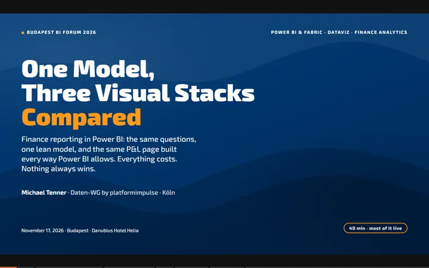
One P&L page, six rungs: finance reporting in Power BI
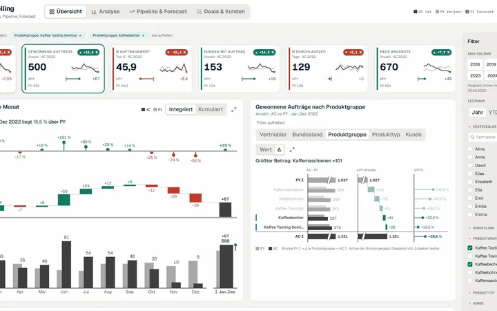
Fabric Apps on Power BI's home turf: sales and finance
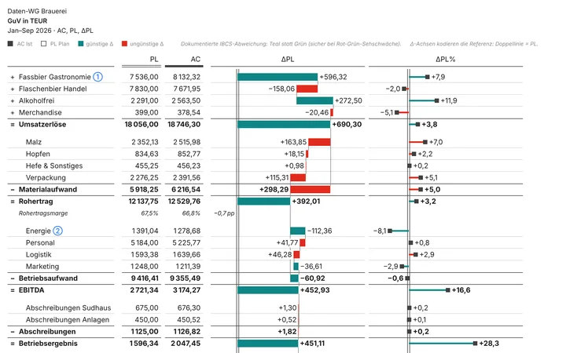
Sankey meets the IBCS waterfall
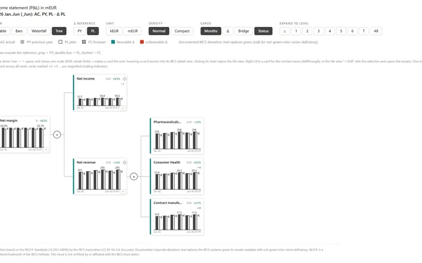
Is AI the new paper? Rethinking prototyping
Podcast episodes in English
Daten-WG talks with people from the data community. These episodes are in English; they open on YouTube.
37 min
Francesco BergamaschiThe Five Pillars of DAX
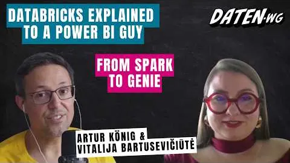
33 minDatabricks explained to a Power BI guy
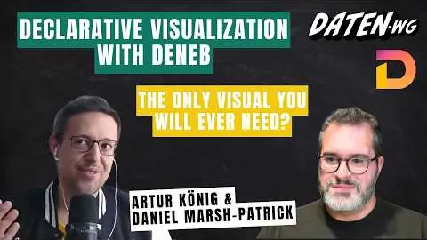
47 minDeclarative visualization with Deneb
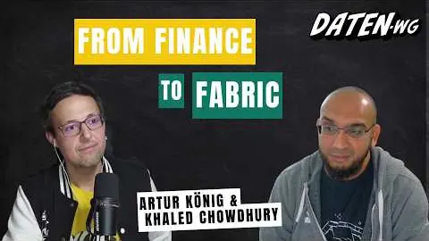
47 minFrom Finance to Fabric
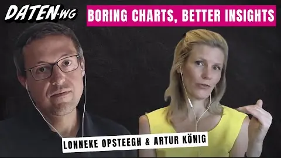
40 minBoring charts, better insights
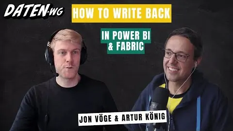
39 minHow to write back
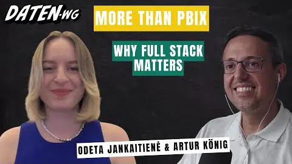
40 minMore than PBIX
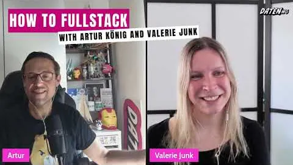
32 minHow to fullstack
All 170+ episodes in the library (German interface, filter by language “EN”)